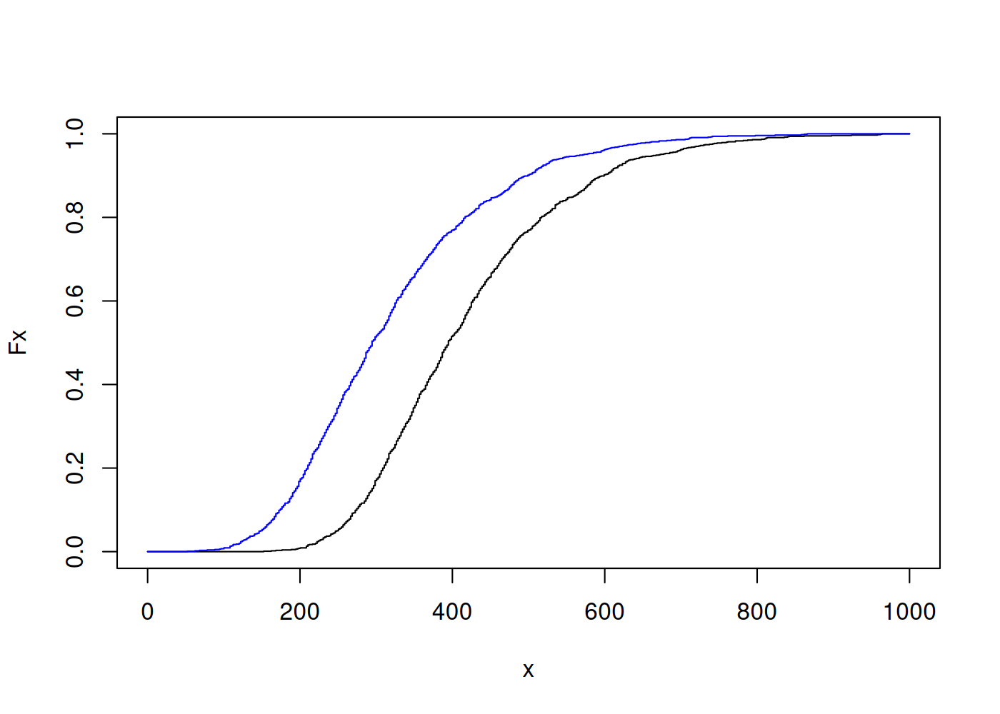
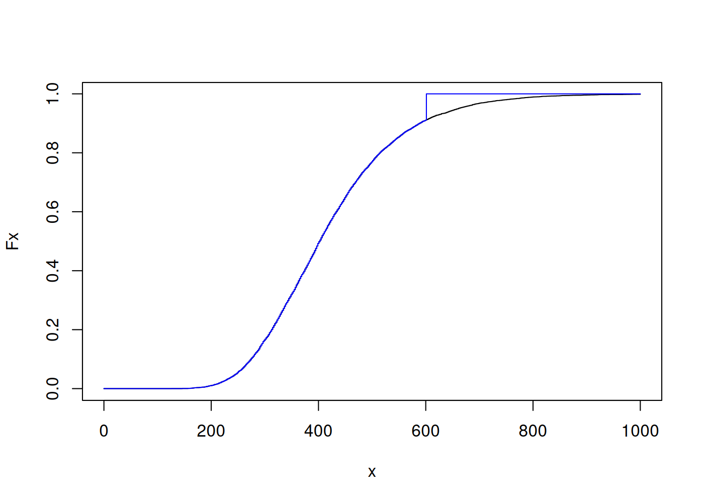
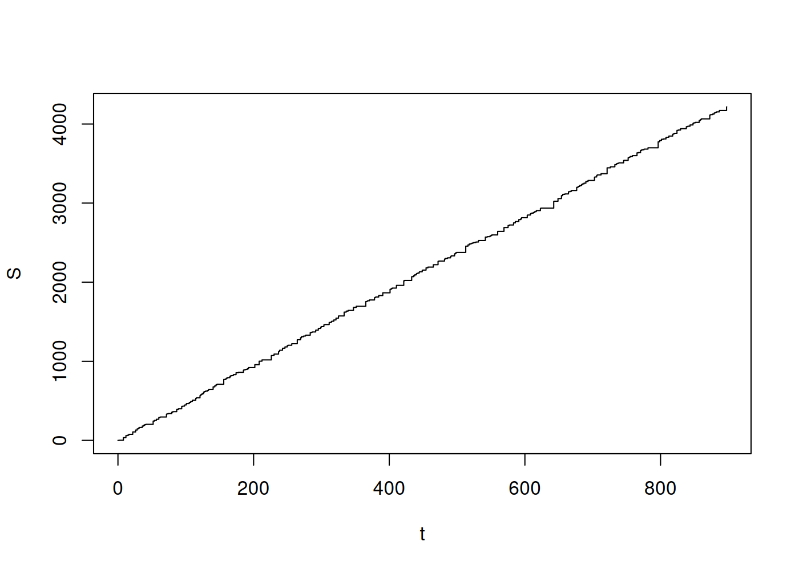

Capítulo 5 Modelos de pérdida agregada
5.1 Mutualización del riesgo
La idea de mantener un seguro está basada en la mutualización de los riesgos. La mutualización como tal nace del mismo mecanismo bajo el cual funciona un seguro, cada asegurado transfiera su riesgo individual a la compañia de seguros por su parte, la suma total de estos riesgos \(S\) es el riesgo total que asume el asegurador.
Los riesgos de cada uno de los \(n \in \mathbb{N}\) asegurados, pueden ser representados por variables aleatorias \(X_1,\ldots X_n\), las mismas pueden ser independientes o dependientes entre ellas. El costo total del portafolio está dado por la suma de todos estos riesgos. \[\begin{equation} S = \sum\limits_{i=1}^n X_i \end{equation}\] El conocer la distribución del costo total \(S\) es una tarea crucial para el asegurador.
El valore esperado de de los reclamos totales, puede ser calculado fácilmente utilizando las propiedades de linealidad de la esperanza matemática \(\mathbb{E}\) \[\begin{equation} \mathbb{E}[ S ] = \mathbb{E}\left[ \sum\limits_{i=1}^n X_i \right] = \sum\limits_{i=1}^n \mathbb{E}\left[ X_i \right] \end{equation}\] por su parte, la varianza de la variable aleatoria del costo total \(S\), está dada por: \[\begin{eqnarray*} \mathbb{V}\left[ S \right] & = & \mathbb{V}\left[ \sum\limits_{i=1}^n X_i \right] \\ & = & \sum\limits_{i=1}^n \mathbb{V}\left[ X_i \right] + \sum\limits_{i=1}^n \sum\limits_{j=1,j\neq i}^n \mathbb{C}\left[ X_i, X_j \right] \\ & = & \sum\limits_{i=1}^n \mathbb{V}\left[ X_i \right] + 2\sum\limits_{i=1}^{n-1} \sum\limits_{j=i+1}^n \mathbb{C}\left[ X_i, X_j \right] \end{eqnarray*}\]
Muchas de las veces el número total de reclamos \(n\) es incierto y por tal razón es mejor considerar que el número de siniestros vendrá dado por otra variable aleatoria discreta \(N\) que solo tomará valores en \(\mathbb{N}\) \[\begin{equation} S = \sum\limits_{i=1}^N X_i \end{equation}\]
Esto nos lleva a considerar diferentes modelos de agregación de reclamos o pérdidas como se suele decir en inglés “loss models” [1], [2].
De forma preliminar estudiemos la forma general que podría tener la distribución de \(S\), sin realizar alguna hipótesis previa sobre el comportamiento de las variables aleatorias \(X_1, \ldots, X_n\) y \(N\). \[\begin{eqnarray*} F( S \leq s ) & = & P\left( \sum\limits_{i=1}^N X_i \leq s \right) \\ & = & P\left( \sum\limits_{i=1}^N X_i \leq s \land N \in \mathbb{N}\right) \\ & = & P\left( \bigcup\limits_{n\in \mathbb{N}} \left\{ \sum\limits_{i=1}^N X_i \leq s \land N \in \{n\} \right\}\right) \\ & = & \sum\limits_{n=0}^{+\infty} P\left( \sum\limits_{i=1}^n X_i \leq s \land N = n \right) \qquad \text{probabilidad de eventos disjuntos} \\ & = & \sum\limits_{n=0}^{+\infty} P\left( \sum\limits_{i=1}^n X_i \leq s\ \middle|\ N = n \right) P( N = n ) \qquad \text{propiedades de la probabilidad condicional} \\ & = & \sum\limits_{n=0}^{+\infty} \int\limits_{\left\{\sum\limits_{i=1}^n x_i \leq s\right\}} dF_n( x_1, \ldots, x_n )\ p_n \qquad \text{$F_n$ es la distribución conjunta de $X_1, \ldots, X_n$} \end{eqnarray*}\] la última expresión es importante de retener, nos dice que para comprender el comportamiento de los reclamos totales \(S\), debemos estudiar y estimar la frecuencia de los reclamos \(N\), y también debemos comprender y estimar cada uno de los reclamos \(X_i\) y también su interacción, siendo al menos estos una infinidad si \(N\) puede tomar valores tendiendo al infinito. En términos resumidos, hay que comprender y estimar la frecuencia y severidad de los reclamos que están asociados al riesgo cubierto.
Los términos integrales \(\int\limits_{\left\{\sum\limits_{i=1}^n x_i \leq s\right\}} dF_n( x_1, \ldots, x_n )\) asociados a la severidad presentan un verdadero reto estadístico y computacional; hace unos años atrás se desarrolló unos nuevos algoritmos para calcular estos términos [13], [14].
5.2 Modelo individual
En el modelo de riesgos individuales consideramos que el número de siniestros que se producirán es conocido, por ejemplo puede ser a lo sumo el tamaño de la población asegurada, en tal caso la variable aleatoria \(N\) pasa a ser una constante, que representaremos por \(n\). De esta forma, la severidad total puede ser fácilmente representada por: \[\begin{equation} S = \sum\limits_{i=1}^n X_i \end{equation}\]
La hipótesis más usual que sostiene a este modelo es la indenpendencia entre cada uno de los reclamos \(X_i\) y \(X_j\) son independientes para cualquier \(1 \leq i \neq j \leq n\).
El valor esperado de la severidad total \(S\) es: \[\begin{eqnarray*} \mathbb{E}[S] & = & \mathbb{E}\left[ \sum\limits_{i=1}^n X_i \right] \\ & = & \sum\limits_{i=1}^n \mathbb{E}\left[ X_i \right] \\ & = & n \mathbb{E}[X] \quad \text{si $\{X_i\}$ son idénticamente distribuidas} \end{eqnarray*}\]
Así mismo con la varianza de \(S\). \[\begin{eqnarray*} \mathbb{V}\left[ S \right] & = & \mathbb{V}\left[ \sum\limits_{i=1}^n X_i \right] \\ & = & \sum\limits_{i=1}^n \mathbb{V}\left[ X_i \right] + \sum\limits_{i=1}^n \sum\limits_{j=1,j\neq i}^n \mathbb{C}\left[ X_i, X_j \right] \\ & = & \sum\limits_{i=1}^n \mathbb{V}\left[ X_i \right]\quad \text{si $\{X_i\}$ sin son independientes entre si} \\ & = & n \mathbb{V}\left[ X \right]\quad \text{si $\{X_i\}$ sin son idénticamente distribuidas} \end{eqnarray*}\]
Al tener un número determinado de reclamos \(n \in \mathbb{N}\), la distribución de probabilidad del total de reclamos \(S\) puede ser calculada de una forma maś sencilla. \[\begin{eqnarray*} F_S( x ) & = & F_{X_1} \star \cdots \star F_{X_n} ( s )\quad \text{sin $\{X_i\}$ son independientes} \\ & = & F_{X}^{\star n}( s )\quad \text{si $\{X_i\}$ son idénticamente distribuidas} \end{eqnarray*}\]
así mismo, si las densidades de probabilidad están bien definidas, entonces \[\begin{eqnarray*} f_S( s ) & = & f_{X_1} \star \cdots \star f_{X_n} ( s )\quad \text{sin $\{X_i\}$ son independientes} \\ & = & f_{X}^{\star n}( s )\quad \text{si $\{X_i\}$ son idénticamente distribuidas} \end{eqnarray*}\]
Una posible estrategias para estimar \(F_S\) o \(f_S\) es utilizar la transformada de Fourier \(\mathscr{F}\), la cual convierte las convoluciones en productos y luego invertir de nuevo la transformada de Fourier. \[\begin{eqnarray*} F_S & = & \mathscr{F}^{-1}\left( \mathscr{F}\left( F_S \right) \right) \\ & = & \mathscr{F}^{-1}\left( \mathscr{F}\left( F_{X_1} \star \cdots \star F_{X_n} \right) \right) \quad \text{sin $\{X_i\}$ son independientes} \\ & = & \mathscr{F}^{-1}\left( \prod\limits_{i=1}^n \mathscr{F}\left( F_{X_i} \right) \right) \\ & = & \mathscr{F}^{-1}\left( \mathscr{F}\left( F_{X} \right)^n \right) \quad \text{si $\{X_i\}$ sin son idénticamente distribuidas } \\ \end{eqnarray*}\]
o de forma equivalente para la densidad \(f_S\) \[\begin{eqnarray*} f_S & = & \mathscr{F}^{-1}\left( \mathscr{F}\left( f_S \right) \right) \\ & = & \mathscr{F}^{-1}\left( \mathscr{F}\left( f_{X_1} \star \cdots \star f_{X_n} \right) \right) \quad \text{sin $\{X_i\}$ son independientes} \\ & = & \mathscr{F}^{-1}\left( \prod\limits_{i=1}^n \mathscr{F}\left( f_{X_i} \right) \right) \\ & = & \mathscr{F}^{-1}\left( \mathscr{F}\left( f_{X} \right)^n \right) \quad \text{si $\{X_i\}$ sin son idénticamente distribuidas } \\ \end{eqnarray*}\]
5.2.1 Algoritmo de simulación
Se puede simular la severidad total \(S\) para el caso donde se asume independencia entre cada una de las severidades \(X_1, \ldots, X_n\) y se conoce cada una de sus densidades de probabilidad \(f_{X_1}, \ldots, f_{X_n}\) o distribuciones de probabilidad \(F_{X_1}, \ldots, F_{X_n}\).
Se tiene fijo \(n \in \mathbb{N}\),
Se fija el número de simulaciones \(m \in \mathbb{N}\)
Para cada \(i \in \{1, \ldots, m\}\) se extrae una muestra \(X_{i,1} \rightsquigarrow f_{X_1},\ldots,X_{i,n} \rightsquigarrow f_{X_n}\),
Para cada \(i \in \{1, \ldots, m\}\) se calcula la severidad total para la muestra \(i\), \(S_i = \sum\limits_{j=1}^n X_{i,j}\)
Ejemplo 5.1 El siguiente código ejemplifica el algoritmo anterior, donde se asume que cada variable aleatoria de severidad \(X_i\) sigue una ley log-normal \(LN( \mu_i, \sigma_i )\), de parámetros \(\mu_i, \sigma_i\), para \(i \in \{1,\ldots, n\}\).
Code
# 1. número de distribuciones
n <- 200
# parámetros para las n distribuciones
mu <- seq( 1, 2, length.out = n )
sigma <- seq( 2, 3, length.out = n )
# 2. número de simulaciones
m <- 1e4
# 3. simulación de severidades
X <- lapply( 1:m, FUN = function( i ) sapply( 1:n, FUN = function( j ) rlnorm( 1, meanlog = mu[ j ], sdlog = sigma[ j ] ) ) )
# 4. simulación de severidad total
S <- sapply( X, FUN = function( x ) sum( x ) )En el ejemplo anterior es de notar que la densidad de probabilidad de la severidad \(S\) resulta de la convolución de las \(n\) densidades individuales \(f_S = f_{X_1} \star \cdots \star f_{X_n}\), la cual no presenta una forma analítica conocida.
De la imposibilidad anterior se se puede ver la utilidad de trabajar con la simulación aleatoria de la variable \(S\). Se puede estimar la distribución acumulada de probabilidad \(F_S\) a partir de la distribución empírica \(F_m\) de la muestra, con: \[\begin{equation} F_S( s ) \approx F_m( s ) = \frac{1}{m} \sum\limits_{i=1}^m \mathbf {1}_{(-\infty,s]}( S_i ) \end{equation}\] el resultado de acotación de 3.4 nos da un criterio de convergencia de \(F_m\) a \(F_S\)
Para construir \(F_m\) en R, se puede utilizar la función ya empaquetada ecdf (empirical cumulative
distribution function).
Code
# estimación distribución acumulada empírica de S
Fm <- ecdf( S )
# esperanza empírica
EeS <- mean( S )
# esperanza teórica
ES <- sum( sapply( 1:n, FUN = function( i ) exp( mu[i] + 0.5 * sigma[i]^2 ) ) )
s <- seq( quantile( S, probs = 0.01 ), quantile( S, probs = 0.99 ), length.out = 1e3 )
Fms <- sapply( s, FUN = Fm )
plot( s, Fms, type = 's' )
abline( v = EeS, col = 'red' )
abline( v = ES, col = 'orange' )
Para calcular la esperanza de la severidad total \(S\), también se puede utilizar una aproximación a la integral de Riemann-Stieltjes utilizando la distribución acumulada empírica \(F_m\). \[\begin{equation} \mathbb{E}[ S ] = \int\limits_{\mathbb{R}} s dF_S( s ) \approx \int\limits_{\mathbb{R}} s dF_m( s ) \approx \sum\limits_{i=1}^N s_{i} \left( F_m( s_{i+1} ) - F_m( s_{i} ) \right) \end{equation}\]
Esta aproximación en R puede ser implementada de la siguiente forma:
Code
De ello tenemos los siguientes resultados de cálculo para el valor esperado de la severidad total \[\begin{eqnarray*} \mathbb{E}[S] = \sum\limits_{i=1}^n e^{ \mu_i + \frac{1}{2} \sigma_i^2 } & = & 34562.7208, \\ \overline{S} = \frac{1}{m} \sum\limits_{i=1}^m S_i & = & 33347.7759, \\ \sum\limits_{i=1}^N s_{i} \left( F_m( s_{i+1} ) - F_m( s_{i} ) \right) & = & 33323.4171 \end{eqnarray*}\]
Lo bueno de poseer una buena aproximación a la distribución acumulada de una variable aleatoria, es que podemos calcular algunos otros valores de importancia relacionados a la variable aleatoria y no tan solo utilizar medidas de tendencia central. Sin embargo, para que esta aproximación sea útil se requiere reducir el error de probabilidad 3.4.
Ejemplo 5.2 Podemos considerar el caso sencillo donde el valor posible de severidad es determinista, es decir para cada póliza \(i\in \{1,\ldots,n\}\), el valor de severidad probable es único \(M > 0\) si en caso se da un evento \(A_i\), esto lo podemos expresar como \(X_i = M \mathbf{1}_{A_i}\) es constante. Así, pérdida total está dada por: \[\begin{equation} S = \sum\limits_{i=1}^n X_i = \sum\limits_{i=1}^n M \mathbf{1}_{A_i} \end{equation}\]
El valor total esperado de reclamos está dado por: \[\begin{equation} \mathbb{E}[ S ] = \sum\limits_{i=1}^n \mathbb{E}\left[ M \mathbf{1}_{A_i} \right] = M \sum\limits_{i=1}^n P( A_i ) \end{equation}\] la última igualdad resulta de las propiedades de la función indicatriz 3.10.
Si en caso todos los \(P(A_i) = p\) tienen la misma probabilidad, el valor total esperado de reclamos toma la siguiente forma: \[\begin{equation} \mathbb{E}[S] = n M p \end{equation}\]
5.3 Modelo colectivo
El modelo colectivo de riesgo considera un número de reclamos descritos por una variable aleatoria discreta \(N\). Los reclamos corresponden a un número de pólizas en un periodo específico, el valor de cada reclamo \(i \in \{1,\ldots,N\}\) está representado por las variables aleatorias \(X_i\). Usualmente, se considera que cada uno de los reclamos \(X_i\) están idénticamente distribuidos. \[\begin{equation} S = \left\{ \begin{array}{ll} \sum\limits_{i=1}^N X_i & \text{si}\ N > 0 \\ 0 & \text{si}\ N = 0 \end{array} \right. \end{equation}\] o de forma más compacta se tan solo utilizar la igualdad \(S = \sum\limits_{i=1}^N X_i\), donde se asume que la suma da \(0\) si \(N = 0\).
El valor esperado del total de reclamos \(S\), está dado por: \[\begin{eqnarray*} \mathbb{E}[S] & = & \mathbb{E}\left[ \sum\limits_{i=1}^N X_i \right] \\ & = & \sum\limits_{n=0}^{+\infty} \mathbb{E}\left[ \sum\limits_{i=1}^n X_i\ \middle|\ N = n \right]P( N = n ) \quad \text{utilizando la esperanza condicional} \\ & = & 0 P( N = 0 ) + \sum\limits_{n=1}^{+\infty} \mathbb{E}\left[ \sum\limits_{i=1}^n X_i\ \middle|\ N = n \right]P( N = n ) \\ & = & \sum\limits_{n=1}^{+\infty} \sum\limits_{i=1}^n \mathbb{E}\left[ X_i \mid N = n \right]P( N = n ) \quad \text{linealidad de la esperanza} \\ & = & \sum\limits_{n=0}^{+\infty} n \mathbb{E}\left[ X \mid N = n \right]P( N = n ) \quad \text{si $\{X_i\}$ son idénticamente distribuidas} \\ & = & \mathbb{E}\left[ X \right] \sum\limits_{n=0}^{+\infty} n P( N = n ) \quad \text{si $X$ y $N$ son independientes} \\ & = & \mathbb{E}[ N ] \mathbb{E}[ X ] \end{eqnarray*}\]
También podemos calcular la varianza de los reclamos totales \(S\), para ello necesitamos primeramente calcular su segundo momento. \[\begin{eqnarray*} \mathbb{E}[S^2] & = & \mathbb{E}\left[ \left( \sum\limits_{i=1}^N X_i \right)^2 \right] \\ & = & \sum\limits_{n=0}^\infty \mathbb{E}\left[ \sum\limits_{i, j=1}^n X_i X_j \middle| N = n \right] P( N = n ) \quad \text{propiedades de la esperanza condicional} \\ & = & \sum\limits_{n=0}^\infty \sum\limits_{i, j=1}^n \mathbb{E}\left[ X_i X_j \right] P( N = n ) \quad \text{si $\{X_i\}$ y $N$ son independientes} \\ & = & \sum\limits_{n=0}^\infty \left( \sum\limits_{i=1}^n \mathbb{E}\left[ X_i^2 \right] + \sum\limits_{i,j=1,i\neq j}^n \mathbb{E}\left[ X_i X_j \right] \right) P( N = n ) \\ & = & \sum\limits_{n=0}^\infty \left( n \mathbb{E}\left[ X^2 \right] + n(n-1) \mathbb{E}\left[ X \right]^2 \right) P( N = n ) \quad \text{si $\{X_i\}$ son i.i.d} \\ & = & \mathbb{E}\left[N\right] \mathbb{E}\left[X^2\right] + \mathbb{E}\left[N^2\right] \mathbb{E}\left[X\right]^2 - \mathbb{E}\left[N\right] \mathbb{E}\left[X\right]^2 \\ & = & \mathbb{E}\left[N\right] \mathbb{V}\left[X\right] + \mathbb{E}\left[N^2\right] \mathbb{E}\left[X\right]^2 \end{eqnarray*}\]
finalmente la varianza de \(S\) tiene la siguiente expresión \[\begin{eqnarray*} \mathbb{V}\left[S\right] & = & \mathbb{E}\left[S^2\right] - \mathbb{E}\left[S\right]^2 \\ & = & \mathbb{E}\left[N\right] \mathbb{V}\left[X\right] + \mathbb{E}\left[N^2\right] \mathbb{E}\left[X\right]^2 - \mathbb{E}\left[N\right]^2 \mathbb{E}\left[X\right]^2 \\ & = & \mathbb{E}\left[N\right] \mathbb{V}\left[X\right] + \mathbb{V}\left[N\right] \mathbb{E}\left[X\right]^2 \end{eqnarray*}\]
La distribución acumulada del reclamo total \(S\) tiene la forma: \[\begin{eqnarray*} F_S( s ) & = & P( S \leq s ) \\ & = & P\left( \sum\limits_{i=1}^N X_i \leq s \right) \\ & = & \sum\limits_{n=0}^{+\infty} P\left( \sum\limits_{i=1}^n X_i \leq s \middle| N = n \right) P( N = n )\quad \text{utilizando la probabilidad condicional} \\ & = & \sum\limits_{n=0}^{+\infty} P\left( \sum\limits_{i=1}^n X_i \leq s \right) p_n\quad \text{si $X_i$ y $N$ son independientes} \\ & = & \sum\limits_{n=0}^{+\infty} F_{X_1} \star \cdots \star F_{X_n}( s ) p_n\quad \text{distribución de la suma de variables aleatorias} \\ & = & \sum\limits_{n=0}^{+\infty} F^{\star n}_{X}( s ) p_n\quad \text{si $\{X_i\}$ son idénticamente distribuidas} \end{eqnarray*}\] tomando \(F^{\star 0}_{X}( s ) = 1\).
Este último resultado muestra que la distribución de probabilidad de \(S\) no es más que una mixtura de las distribuciones para los modelos individuales \(F^{\star n}_{X}\) tomando para mezclarlas las probabilidades \(p_n = P( N = n )\) de la variable aleatoria discreta \(N\) que describe la frecuencia de los reclamos.
5.3.1 Algoritmo de simulación
La variable del reclamo total \(S\) puede ser simulada mediante el siguiente método montecarlo. Si \(N\) sigue una ley discreta \(f_N\) y cada valor severidad \(X\) son idénticamente distribuidos con ley \(f_X\).
Seleccionar el número de simulaciones \(m\),
Se genera una muestra de tamaño \(m\) de variables \(N_1, \ldots, N_m\) con ley \(f_N\),
Se genera para cada \(i \in \{1,\ldots,m\}\) una muestra de tamaño \(N_i\) de variables aleatorias \(X_{i,1}, \ldots X_{i,N_i}\) con ley \(f_X\),
Se calcula los reclamos totales \(S_1, \ldots, S_m\) para cada simulación \(i = \{1, \ldots, m\}\), mediante la siguiente suma \(S_i = \sum\limits_{j=1}^{N_i} X_{i,j}\).
En el lenguaje de programación R, este método de simulación puede ser fácilmente implementado,
como ya lo hemos realizado, utilizando las funciones de aplicación vectorial sapply y lapply.
Ejemplo 5.3 Consideramos el caso de un modelo colectivo para el cuál el conteo de siniestros \(N \rightsquigarrow Pois( \lambda )\) y la distribución de cada uno de los reclamos \(\{X_i\}_{i\in \mathbb{N}}\), está dada por la misma distribución de probabilidad \(X \rightsquigarrow LN( \mu, \sigma )\), siendo además cada uno de los reclamos indepencientes entre si.
Code
# 1. selección de simulaciones
m <- 1e4
# 2. especificación de los parámetros para las distribuciones
u <- 5
s <- 2
l <- 3
# 3. simulación del conteo de siniestros
N <- rpois( n = m, lambda = l )
# 4. simulación de la severidad de los reclamos
X <- lapply( N, FUN = function( n ) rlnorm( n, meanlog = u, sdlog = s ) )
# 5. reclamo total, agregación por cada simulación
S <- sapply( X, FUN = function( x ) sum( x, na.rm = TRUE ) )Es de notar que una algoritmo como el descrito tiene una falencia cuando la frecuencia de siniestros es poco observada, esto sucede cuando la probabilidad \(P( N = 0 )\) es alta y por tal razón para generar suficientes reclamos y así poder tener cálculos con una buena aproximación numérica, con el uso de simulaciones se necesitará muchas simulaciones.
Es interesante observar que el modelo colectivo puede ser muchas veces calculado de forma similar a un modelo individual, para ciertos casos particulares. Por ejemplo, si consideramos el caso cuando la variable aleatoria del conteo de siniestros \(N \rightsquigarrow Bin( n, p )\) sigue una distribución binomial con parámetros \(n\) y \(p\) y los reclamos individuales \(\{ X_i \}\) son i.i.d. A partir de esto, el reclamo total \(S\) puede ser expresado de dos formas \[\begin{equation} S = \sum\limits_{k=0}^{N} X_k = \sum\limits_{k=0}^n B_k X_k \end{equation}\] donde \(B_k \rightsquigarrow Ber( p )\) y es independientes de \(X_k\). Así el modelo colectivo se transforma en un modelo individual con \(n\) constante y valores de reclamos individuales dados por la variable aleatoria \(Y_k = B_k X_k\).
Para este caso en particular \[\begin{eqnarray*} \mathbb{E}[ S ] & = & \mathbb{E}\left[ \sum\limits_{k=0}^{n} B_k X_k \right] \\ & = & \sum\limits_{k=0}^{n} \mathbb{E}\left[ B_k X_k \right] \\ & = & n \mathbb{E}[ B X ] \\ & = & n \mathbb{E}[ B ] \mathbb{E}[ X ] \\ & = & n p \mathbb{E}[ X ] \end{eqnarray*}\]
así mismo, \[\begin{eqnarray*} \mathbb{V}[ S ] & = & n \mathbb{V}[ B X ] \\ & = & n \left( \mathbb{E}[ B^2 X^2 ] - \mathbb{E}[ B X ]^2 \right) \\ & = & n \left( \mathbb{E}[ B^2 ] \mathbb{E}[ X^2 ] - \mathbb{E}[ B ]^2 \mathbb{E}[ X ]^2 \right) \\ & = & n \left( p \mathbb{E}[ X^2 ] - p^2 \mathbb{E}[ X ]^2 \right) \\ & = & n \left( p \mathbb{E}[ X^2 ] - p \mathbb{E}[ X ]^2 + p \mathbb{E}[ X ]^2 - p^2 \mathbb{E}[ X ]^2 \right) \\ & = & n \left( p \mathbb{V}[ X ] + p ( 1 - p ) \mathbb{E}[ X ]^2 \right) \\ & = & n \left( \mathbb{E}[B] \mathbb{V}[ X ] + \mathbb{V}[B] \mathbb{E}[ X ]^2 \right) \end{eqnarray*}\]
Ejemplo 5.3 Hacemos uso del algoritmo de simulación, pero bajo la consideración anterior donde el conteo de siniestros \(N \rightsquigarrow Bin( n, p )\), en algunos casos se puede considerar \(n\) como el número de pólizas vendidas, esto supone que solo se presenta un reclamo por póliza. Por su parte los reclamos consideraremos \(X_i \rightsquigarrow LN( \mu, \sigma )\), para todo \(i \in \{1,\ldots,n\}\). Si consideramos generar la simulación como un modelo individual, generamos variables aleatorias \(B_i \rightsquigarrow Ber(p)\), para todo \(i \in \{1,\ldots,n\}\).
Code
m <- 1e4
n <- 1000
p <- 0.2
mu <- 5
sigma <- 2
B <- lapply( 1:m, FUN = function( i ) rbinom( n, size = 1, prob = p ) )
X <- lapply( 1:m, FUN = function( i ) rlnorm( n, meanlog = mu, sdlog = sigma ) )
S <- sapply( 1:m, FUN = function( i ) sum( B[[ i ]] * X[[ i ]], na.rm = TRUE ) )
EeS <- mean( S )
ES <- n * p * exp( mu + 0.5 * sigma^2 )\[\begin{eqnarray*} \mathbb{E}[S] = n p e^{ \mu + \frac{1}{2} \sigma^2 } & = & 219326.6317, \\ \overline{S} = \frac{1}{m} \sum\limits_{i=1}^m S_i & = & 218593.3764, \end{eqnarray*}\]
Es importante observar que si la frecuencia de reclamos es superior a \(1\), sea este por póliza, individuo o en general por unidad asegurada, la aproximación anterior no es la correcta si no se realiza un ajuste al valor \(n\) que es el número máximo de siniestros. Sino también, se puede considera que las variables de los reclamos es la suma total de reclamos por póliza.
Por otra parte, es de notar que en el cálculo hay un gasto innecesario de valores simulados de reclamos \(X_i\) ya que algunos se multiplicaran por \(B_i\), la cual solo toma valores \(\{0,1\}\).
5.4 Modelos mixtos
En algunos casos en particular se considera un modelo de agregación que es una mixtura entre el modelo individual y el modelo colectivo. Se parte de considerar un número \(n\) de unidades aseguradas donde para cada unidad \(i \in \{1, \ldots, n\}\), se considera que puede presentar una cantidad de reclamos dados por una variable aleatoria discreta \(N_i\), y así para cada presentar un número de reclamos \(X_{i,1}, \ldots, X_{i,N_i}\). Así el reclamo total viene dado por la expresión \[\begin{equation} S = \sum\limits_{i=1}^n X_i = \sum\limits_{i=1}^n \sum\limits_{j=1}^{N_i} X_{i,j} \end{equation}\]
5.5 Modelos con variables explicativas
En algunos casos más generales, donde la población presenta heterogeneidad respecto del riesgo al cual están expuestos, como también de las dimensiones de sus reclamos, se considera que existen variables aleatorias adicionales \(Y_1, \ldots, Y_n\) que determinan el número de reclamos \(N\) y el valor de los siniestros \(\{X_i\}\). Es decir no hay independencia entre \(\{Y_j\}\) y \(N\) así como tampoco entre \(\{Y_j\}\) y \(\{X_i\}\). Es así que un modelo colectivo \(S = \sum\limits_{i=1}^N X_i\) su estudio, estimación y tarificación debe ser realizada de forma condicional respecto de las variables aleatorias explicativas \(\{Y_j\}\), \[\begin{equation} \mathbb{E}[ S ] = \mathbb{E}\left[ \mathbb{E}\left[ S \middle| Y_1, \ldots, Y_n \right] \right] \end{equation}\] de donde es necesario estimar cada una de las esperanzas condicionadas \(\mathbb{E}\left[ S \middle| Y_1, \ldots, Y_n \right]\).
En la práctica las variables explicativas \(\{ Y_j \}\) suelen ser seleccionadas para caracterizar el perfil de riesgo de cada cliente. Para su selección se suele utilizar algunos criterios de tipo económico, financiero, legal y estadístico.
5.6 Proceso estocástico de reclamos totales
Hasta el momento no hemos considerado que los reclamos se producen en el tiempo, que cada reclamo está bien vinculado al tiempo; es más podemos identificar algunos instantes en el tiempo que le corresponde, tenemos así el tiempo cuando se suscita el siniestro o tiempo de ocurrencia, el tiempo de aviso cuando se comunica al asegurador el siniestro y un tiempo de pago. Los dos últimos no son directos asociados al evento del siniestro sino están asociados a otras variables que pueden afectar la demora para comunicar un siniestro por parte del asegurado y la demora para cancelarlo por parte del asegurador.
Así por tanto si tenemos una secuencia de siniestros \(\{X_n\}_{n\in\mathbb{N}^*}\), estos los podemos considerar ordenados en el tiempo conforme han venido presentándose en instantes \(T_1 \leq \cdots \leq T_n \leq \cdots\), es decir se le asocia a los reclamos \(\{X_n\}\) la secuencia de los tiempos de arribo \(\{T_n\}_{n\in\mathbb{N}^*}\), donde \(T_1 > 0\) y \(T_{n+1} \geq T_n\), para cualquier \(n \in \mathbb{N}\). Ciertamente, es de esperar que los tiempos de arribo sean variables aleatorias y están asociados a la frecuencia \(N\) en un periodo dado, ya que \(N\) cuenta los tiempos de arribo hasta un tiempo dado, transformamos así a \(N\) en una variable aleatoria dependiente del tiempo, en lo que se conoce como un proceso estocástico. \[\begin{equation} N( t ) = \#\left\{ k \in \mathbb{N}\ \middle|\ T_k \leq t \right\} = \sum\limits_{k=0}^{+\infty} \mathbf{1}_{(-\infty,t]}\left( T_k \right) \end{equation}\]
Inmediatamente de este razonamiento, resulta que los reclamos totales también se transforman en proceso estocástico. \[\begin{equation} S( t ) = \sum\limits_{i=1}^{N( t )} X_i \end{equation}\]
Además, se pueden identificar las variables aleatorias de tiempos entre arribos \[\begin{equation} W_n = T_n - T_{n-1},\quad \forall n \in \mathbb{N} \end{equation}\] tomando \(T_0 = 0\).
5.7 Aplicación del deducible
En muchas ocasiones según las condiciones de los contratos de seguro y el apetito de riesgo del asegurador, se configura funciones deducibles sobre los reclamos.
Code
# 1. selección de simulaciones
m <- 1e4
# 2. especificación de los parámetros para las distribuciones
u <- 5
s <- 2
l <- 3
# 3. se especifica la función deducible
D <- function( x, d, M ) {
return( min( max( x - d, 0 ), M ) )
}
# 4. simulación del conteo de siniestros
N <- rpois( n = m, lambda = l )
# 5. simulación de la severidad de los reclamos
X <- lapply( N, FUN = function( n ) rlnorm( n, meanlog = u, sdlog = s ) )
# 6. se aplica el deducible a los reclamos
DX <- lapply( X, FUN = function( x ) sapply( x, FUN = function( y ) D( y, 10, 1000 ) ) )
# 7. reclamo total, agregación por cada simulación
S <- sapply( DX, FUN = function( x ) ifelse( length( x ) == 0, 0, sum( x, na.rm = TRUE ) ) )\(S_1, \ldots, S_m \rightsquigarrow F_S\)
Code

Ejemplo 5.4 En este caso en particular estudiaremos la velocidad de convergencia del método resultante del teorema del límite central 3.2. Generaremos una simulación aleatoria de la suma agregada \(S_n\) y mostraresmo s
Code
m <- 500
n <- 1000
u <- 4
s <- 2
X <- lapply( 1:m, FUN = function( j ) rlnorm( n, meanlog = u, sdlog = s ) )
EX <- exp( u + 0.5 * s^2 )
SDX <- sqrt( ( exp( s^2 ) - 1 ) * exp( 2 * u + s^2 ) )
S <- lapply( X, FUN = function( x ) cumsum( x ) )
ES <- sapply( 1:n, FUN = function( i ) mean( sapply( 1:m, FUN = function( j ) S[[ j ]][ i ] ) ) )
VS <- sapply( 1:n, FUN = function( i ) var( sapply( 1:m, FUN = function( j ) S[[ j ]][ i ] ) ) )
NS <- lapply( S, FUN = function( s ) ( s - ES ) / sqrt( abs( VS ) ) )
z <- seq( -4, 4, length.out = 100 )
FSn <- lapply( 1:n, FUN = function( i ) ecdf( sapply( 1:m, FUN = function( j ) NS[[ j ]][ i ] ) )( z ) )
D <- sapply( FSn, FUN = function( Fn ) max( abs( Fn - pnorm( z ) ) ) )
C <- 0.015
# C <- 1 / sqrt( 2 * pi )
rho <- exp( 3 * u + 3^2 * s^2 / 2 )
Bn <- C * rho / ( SDX^3 * sqrt( 1:n ) )
plot( 1:n, D, pch = 16, cex = 0.5, type = 'l', lwd = 2, lty = 1, ylim = c( 0, 0.5 ), col = 'royalblue4' )
points( 1:n, Bn, type = 'l', lty = 1, col = 'red' )
Code
l <- 3
n <- 300
dt <- rexp( n = n, rate = 1 / l )
t <- c( 0, cumsum( dt ) )
dN <- sapply( dt, FUN = function( w ) rpois( 1, lambda = l * w ) )
N <- c( 0, cumsum( dN ) )
sh <- 3
rt <- 2
X <- lapply( dN, FUN = function( n ) rgamma( n, shape = sh, rate = rt ) )
dS <- sapply( X, FUN = function( x ) sum( x ) )
S <- c( 0, cumsum( dS ) )
plot( t, N, type = 's' )
5.9 Estimación usando la transformada de Fourier
Para el caso del modelo individual de riesgos podemos hacer uso de la siguiente estimación de la densidad de probabilidad de los reclamos totales \(S\), utilizando la transformada de Fourier. En la implementación numérica se utiliza la transformada de Fourier rápida (FFT). \[\begin{equation} \mathscr{F}\left( f_S \right) = \mathscr{F}\left( f^{\star n}_X \right) = \mathscr{F}\left( f_X \right)^{n} \end{equation}\]
Por tanto de esta relación como la transformada de Fourier es invertible, existe \(\mathscr{F}^{-1}\). Resulta el siguiente método para calcular la densidad de \(S\) \[\begin{equation} f_S = \mathscr{F}^{-1}\left( \mathscr{F}\left( f_S \right) \right) = \mathscr{F}^{-1}\left(\mathscr{F}\left( f_X \right)^{n} \right) \end{equation}\]
En conclusión para determinar la densidad de probabilidad de \(S\) basta conocer la transformada de Fourier de la distribución de los reclamos individuales, multiplicarla por si misma \(n\) veces y tomar la transformada de Fourier inversa.
\[\begin{eqnarray*} \mathscr{F}\left( f_S \right) & = & \mathscr{F}\left( \sum\limits_{n=0}^{+\infty} p_n f_X^{\star n} \right) \\ & = & \sum\limits_{n=0}^{+\infty} p_n \mathscr{F}\left( f_X^{\star n} \right) \\ & = & \sum\limits_{n=0}^{+\infty} p_n \mathscr{F}\left( f_X \right)^{n} \end{eqnarray*}\]
como consecuencia \[\begin{eqnarray*} f_S & = & \mathscr{F}^{-1}\left( \mathscr{F}\left( f_S \right) \right)\\ & = & \mathscr{F}^{-1}\left( \sum\limits_{n=0}^{+\infty} p_n \mathscr{F}\left( f_X \right)^{n} \right)\quad \text{Una sola inversión} \\ & = & \sum\limits_{n=0}^{+\infty} p_n \mathscr{F}^{-1}\left( \mathscr{F}\left( f_X \right)^{n} \right)\quad \text{Una inversión por cada término en la suma} \end{eqnarray*}\]
\[\begin{equation} W_n = \frac{S_n}{n} \end{equation}\]
\[\begin{equation} \mathbb{E}\left[ W_n \right] = \mathbb{E}\left[ \frac{S_n}{n} \right] = \frac{1}{n} \mathbb{E}\left[ S_n \right] \end{equation}\]
\[\begin{equation} \mathbb{V}\left[ W_n \right] = \mathbb{V}\left[ \frac{S_n}{n} \right] = \frac{1}{n^2} \mathbb{V}\left[ S_n \right] \end{equation}\]